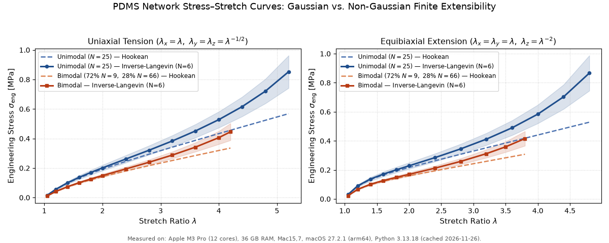
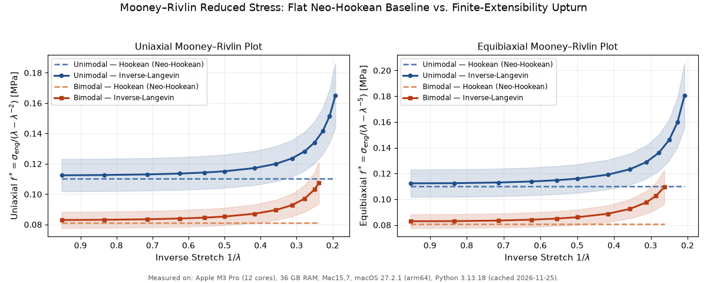
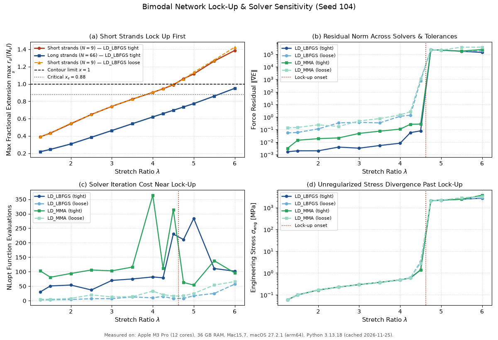
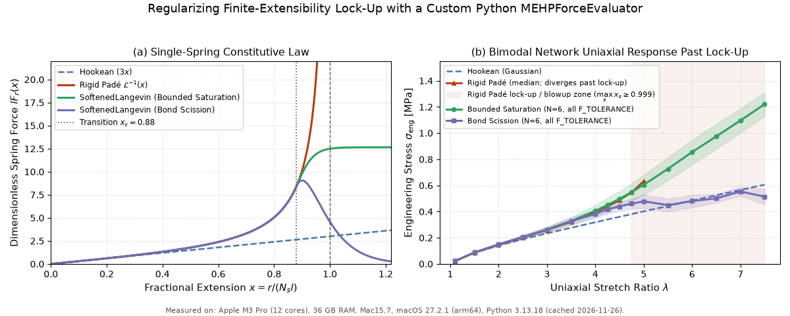

Note
Go to the end to download the full example code.
Finite Extensibility & Large-Strain Stiffening¶
This example investigates finite-chain extensibility and large-strain stiffening in
end-linked PDMS networks using NonGaussianSpringForceEvaluator
versus the Gaussian HookeanForceEvaluator inside the
unified MEHPSimulator framework
(Gusev [Gus19], Bernhard and Gusev [BG25],
Bernhard et al. [BSG25]).
Constitutive Formulation & Parameter Consistency¶
For a polymer strand with contour segment count \(N_s\)
(spring_contour_length) and Kuhn segment length \(l\),
NonGaussianSpringForceEvaluator evaluates the fractional
extension \(x = \|\Delta\mathbf{r}_s\| / (N_s l)\) and radial force using
Cohen’s Padé approximation to the inverse Langevin function:
In the small-strain limit (\(x \ll 1\)),
\(\mathbf{F}_s \to \frac{3}{N_s l^2}\Delta\mathbf{r}_s\). Choosing PDMS Kuhn
parameters (KUHN,
\(b = l_K = 1.142\,\text{nm}\)) with l = b and pairing with
HookeanForceEvaluator(kappa=3.0 / l**2) ensures that both models share the exact
same Gaussian small-strain stiffness and stress scale (\(k_B T / \text{nm}^3\)).
Volume-Preserving Deformation & Mooney–Rivlin Plots¶
We compare two \(f=4\) phantom topologies with matched mean strand length \(\langle N \rangle \approx 25\) beads:
Unimodal: \(N = 25\) beads per strand.
Bimodal: \(72\%\) short strands (\(N_{\text{short}} = 9\)) and \(28\%\) long strands (\(N_{\text{long}} = 66\)), matching \(\langle N \rangle = 24.96\) (Tsimouri et al. [TCG21]).
Under incompressible uniaxial tension (\(\lambda_x = \lambda, \lambda_y = \lambda_z = \lambda^{-1/2}\)) and equibiaxial extension (\(\lambda_x = \lambda_y = \lambda, \lambda_z = \lambda^{-2}\)), the engineering stress and Mooney–Rivlin reduced stress \(f^*\) are:
import copy
import math
from pathlib import Path
import sys
import matplotlib.pyplot as plt
import numpy as np
if "__file__" in globals():
_examples_dir = str(Path(__file__).resolve().parents[1])
_fb_dir = str(Path(__file__).resolve().parent)
for _p in (_examples_dir, _fb_dir):
if _p not in sys.path:
sys.path.insert(0, _p)
from _example_cache import ( # noqa: E402
format_benchmark_footnote,
get_example_cache_path,
load_or_compute_cache,
)
from _finite_extensibility_runner import ( # noqa: E402
RegularizationMode,
SoftenedLangevinForceEvaluator,
run_finite_extensibility_study,
)
from pylimer_tools.io.bead_spring_parameter_provider import ( # noqa: E402
ParameterType,
get_parameters_for_polymer,
)
import pylimer_tools_cpp as pt # noqa: E402
Quick Live API Walkthrough & SlipMode.FIXED Constraint¶
We build a small PDMS Kuhn-scale \(f=4\) network, run Gaussian, Padé
inverse-Langevin, and regularized custom evaluators at \(\lambda = 2.0\),
and verify that NonlinearOptimizationSolver
enforces FIXED (meaning coupled non-Gaussian
finite extensibility and sliding slip-links are not simultaneously supported).
params = get_parameters_for_polymer("PDMS", parameter_type=ParameterType.KUHN)
l_kuhn = float(params.get("<b>").to("nm").magnitude)
r02 = float(params.get("<b^2>").to("nm^2").magnitude)
rho_beads = float(params.get_bead_density())
gamma_conv = float(params.get_gamma_conversion_factor().to("MPa").magnitude)
n_demo_strands = 120
box_l = ((n_demo_strands * 25 + n_demo_strands // 2) / rho_beads) ** (1.0 / 3.0)
gen = pt.MCUniverseGenerator(box_l, box_l, box_l)
gen.set_seed(42)
gen.set_bead_distance(l_kuhn)
gen.set_mean_squared_bead_distance(r02)
gen.config_nr_of_mc_steps(0)
gen.add_crosslinkers(n_demo_strands // 2, 4, 2, True)
gen.add_strands(n_demo_strands, [25] * n_demo_strands, 1)
gen.link_strands_to_conversion(0.95)
demo_net = gen.get_mehp_network(entanglement_mode=pt.EntanglementMode.NONE)
nl_cfg = pt.MEHPNonlinearSolverConfig()
nl_cfg.algorithm = pt.NLoptAlgorithm.LD_LBFGS
nl_cfg.xtol = 1e-12
nl_cfg.ftol = 1e-9
assert nl_cfg.slip_mode == pt.SlipMode.FIXED
lam_demo = 2.0
def_box = pt.Box(
box_l * lam_demo, box_l / math.sqrt(lam_demo), box_l / math.sqrt(lam_demo)
)
for label, evaluator, cfg in (
(
"Hookean",
pt.HookeanForceEvaluator(3.0 / (l_kuhn**2)),
pt.MEHPLinearSolverConfig(),
),
("NonGaussian (Pade)", pt.NonGaussianSpringForceEvaluator(1.0, l_kuhn), nl_cfg),
(
"SoftenedLangevin (Python)",
SoftenedLangevinForceEvaluator(
l=l_kuhn,
x_c=0.88,
regularization_mode=RegularizationMode.BOUNDED_SATURATION,
),
nl_cfg,
),
):
sim = pt.MEHPSimulator(demo_net, evaluator, False)
sim.run(cfg)
sim_def = copy.copy(sim)
sim_def.deform_to(def_box)
res = sim_def.run(cfg)
s_mpa = np.asarray(sim_def.get_stress_tensor(), dtype=np.float64) * gamma_conv
sig_eng = (s_mpa[0, 0] - 0.5 * (s_mpa[1, 1] + s_mpa[2, 2])) / lam_demo
print(
f"{label:26s} | sigma_eng(lam=2)={sig_eng:.4f} MPa | exit={res.exit_reason.name}"
)
# Load precomputed multi-seed ensemble study
cache_path = get_example_cache_path(
"finite_extensibility_deformation_cache.npz", "force_balance"
)
data = load_or_compute_cache(cache_path, run_finite_extensibility_study)
n_repeats = int(data["n_repeats"])
footnote = format_benchmark_footnote(data)
print(
f"SlipMode check — default FIXED: {bool(data['slip_default_is_fixed'])}, "
f"FIXED converged: {bool(data['slip_fixed_converged'])}, "
f"SLIDING rejected: {bool(data['slip_sliding_rejected'])} "
f"({str(data['slip_sliding_error']).splitlines()[0]})"
)
Hookean | sigma_eng(lam=2)=0.1148 MPa | exit=X_TOLERANCE
NonGaussian (Pade) | sigma_eng(lam=2)=0.1179 MPa | exit=FAILURE
SoftenedLangevin (Python) | sigma_eng(lam=2)=0.1179 MPa | exit=F_TOLERANCE
Loading cached example data from finite_extensibility_deformation_cache.npz...
SlipMode check — default FIXED: True, FIXED converged: True, SLIDING rejected: True (NonlinearOptimizationSolver only supports SlipMode::FIXED.)
Uniaxial & Equibiaxial Stress–Stretch Response (Gaussian vs. Inverse-Langevin)¶
Multi-seed ensemble averages (6 independent networks, 3 orthogonal loading axes per network, shaded 95% Student’s \(t\) confidence intervals) reveal:
At small extensions (\(\lambda \lesssim 1.8\)),
NonGaussianSpringForceEvaluatoragrees closely withHookeanForceEvaluator(within ~2–3% due to finite initial \(\langle x_0^2 \rangle \sim 1/N_s\)).At larger strains, finite extensibility produces pronounced strain stiffening absent from Hookean springs.
Even at matched \(\langle N \rangle \approx 25\), the bimodal network locks up and stiffens at lower stretch (\(\lambda \approx 3.8\text{--}4.2\)) than the unimodal network (\(\lambda \approx 4.8\text{--}5.2\)) because the 72% short-strand fraction (\(N_{\text{short}} = 9\)) forms a percolating stiff backbone.
fig, axes = plt.subplots(1, 2, figsize=(12, 4.8), sharey=False)
colors = {
"uni_hook": "#4C72B0",
"uni_ng": "#1f4e8c",
"bim_hook": "#DD8452",
"bim_ng": "#b83b14",
}
for ax, mode_tag, lams_uni_key, lams_bim_key, title in (
(
axes[0],
"uni",
"uni_lams_uni",
"uni_lams_bim",
r"Uniaxial Tension ($\lambda_x=\lambda,\ \lambda_y=\lambda_z=\lambda^{-1/2}$)",
),
(
axes[1],
"biax",
"biax_lams_uni",
"biax_lams_bim",
r"Equibiaxial Extension ($\lambda_x=\lambda_y=\lambda,\ \lambda_z=\lambda^{-2}$)",
),
):
lams_u = data[lams_uni_key]
lams_b = data[lams_bim_key]
ax.plot(
lams_u,
data[f"uni_{mode_tag}_hook_sig_mean"],
"--",
color=colors["uni_hook"],
linewidth=1.8,
label="Unimodal ($N=25$) — Hookean",
)
ng_u = data[f"uni_{mode_tag}_ng_sig_mean"]
ng_u_ci = data[f"uni_{mode_tag}_ng_sig_ci"]
ax.plot(
lams_u,
ng_u,
"o-",
color=colors["uni_ng"],
linewidth=2.2,
markersize=4.5,
label=f"Unimodal ($N=25$) — Inverse-Langevin (N={n_repeats})",
)
ax.fill_between(
lams_u, ng_u - ng_u_ci, ng_u + ng_u_ci, color=colors["uni_ng"], alpha=0.16
)
ax.plot(
lams_b,
data[f"bim_{mode_tag}_hook_sig_mean"],
"--",
color=colors["bim_hook"],
linewidth=1.8,
label="Bimodal ($72\\%\\ N=9,\\ 28\\%\\ N=66$) — Hookean",
)
ng_b = data[f"bim_{mode_tag}_ng_sig_mean"]
ng_b_ci = data[f"bim_{mode_tag}_ng_sig_ci"]
ax.plot(
lams_b,
ng_b,
"s-",
color=colors["bim_ng"],
linewidth=2.2,
markersize=4.5,
label=f"Bimodal — Inverse-Langevin (N={n_repeats})",
)
ax.fill_between(
lams_b, ng_b - ng_b_ci, ng_b + ng_b_ci, color=colors["bim_ng"], alpha=0.16
)
ax.set_xlabel(r"Stretch Ratio $\lambda$", fontsize=11)
ax.set_ylabel(r"Engineering Stress $\sigma_{\mathrm{eng}}$ [MPa]", fontsize=11)
ax.set_title(title, fontsize=11.5)
ax.grid(True, linestyle=":", alpha=0.6)
ax.legend(fontsize=8.5, loc="upper left")
fig.suptitle(
"PDMS Network Stress–Stretch Curves: Gaussian vs. Non-Gaussian Finite Extensibility",
fontsize=13,
y=0.99,
)
fig.text(0.5, 0.01, footnote, ha="center", fontsize=8, color="#555555")
fig.tight_layout(rect=(0.0, 0.04, 1.0, 0.95))
plt.show()

Mooney–Rivlin Reduced Stress Analysis¶
Plotting the reduced stress \(f^*\) against \(1/\lambda\) isolates deviations from ideal neo-Hookean elasticity:
Hookean networks remain strictly horizontal at \(f^* = G_0\) across all deformations (\(G_0^{\text{uni}} = 0.110\,\text{MPa}\), \(G_0^{\text{bim}} = 0.081\,\text{MPa}\), consistent with the slightly lower active weight fraction \(w_{\text{active}} = 0.843\) vs. \(0.874\) in the bimodal topology due to short-strand loop formation).
Non-Gaussian networks exhibit the classic Mooney–Rivlin upturn as \(1/\lambda \to 0\). Equibiaxial extension reaches larger first strain invariant \(I_1 = 2\lambda^2 + \lambda^{-4}\) at smaller \(\lambda\), driving a stronger upturn at comparable inverse stretch.
fig, axes = plt.subplots(1, 2, figsize=(12, 4.8), sharey=False)
for ax, mode_tag, lams_uni_key, lams_bim_key, ylabel, title in (
(
axes[0],
"uni",
"uni_lams_uni",
"uni_lams_bim",
r"Uniaxial $f^* = \sigma_{\mathrm{eng}} / (\lambda - \lambda^{-2})$ [MPa]",
"Uniaxial Mooney–Rivlin Plot",
),
(
axes[1],
"biax",
"biax_lams_uni",
"biax_lams_bim",
r"Equibiaxial $f^* = \sigma_{\mathrm{eng}} / (\lambda - \lambda^{-5})$ [MPa]",
"Equibiaxial Mooney–Rivlin Plot",
),
):
inv_u = 1.0 / data[lams_uni_key]
inv_b = 1.0 / data[lams_bim_key]
ax.plot(
inv_u,
data[f"uni_{mode_tag}_hook_fstar_mean"],
"--",
color=colors["uni_hook"],
linewidth=1.8,
label="Unimodal — Hookean (Neo-Hookean)",
)
fu = data[f"uni_{mode_tag}_ng_fstar_mean"]
fu_ci = data[f"uni_{mode_tag}_ng_fstar_ci"]
ax.plot(
inv_u,
fu,
"o-",
color=colors["uni_ng"],
linewidth=2.2,
markersize=4.5,
label="Unimodal — Inverse-Langevin",
)
ax.fill_between(inv_u, fu - fu_ci, fu + fu_ci, color=colors["uni_ng"], alpha=0.16)
ax.plot(
inv_b,
data[f"bim_{mode_tag}_hook_fstar_mean"],
"--",
color=colors["bim_hook"],
linewidth=1.8,
label="Bimodal — Hookean (Neo-Hookean)",
)
fb = data[f"bim_{mode_tag}_ng_fstar_mean"]
fb_ci = data[f"bim_{mode_tag}_ng_fstar_ci"]
ax.plot(
inv_b,
fb,
"s-",
color=colors["bim_ng"],
linewidth=2.2,
markersize=4.5,
label="Bimodal — Inverse-Langevin",
)
ax.fill_between(inv_b, fb - fb_ci, fb + fb_ci, color=colors["bim_ng"], alpha=0.16)
ax.set_xlabel(r"Inverse Stretch $1/\lambda$", fontsize=11)
ax.set_ylabel(ylabel, fontsize=11)
ax.set_title(title, fontsize=11.5)
ax.invert_xaxis()
ax.grid(True, linestyle=":", alpha=0.6)
ax.legend(fontsize=8.5, loc="upper left")
fig.suptitle(
"Mooney–Rivlin Reduced Stress: Flat Neo-Hookean Baseline vs. Finite-Extensibility Upturn",
fontsize=13,
y=0.99,
)
fig.text(0.5, 0.01, footnote, ha="center", fontsize=8, color="#555555")
fig.tight_layout(rect=(0.0, 0.04, 1.0, 0.95))
plt.show()

Limitations Exposed: Lock-Up Divergence & Solver Tolerance Sensitivity¶
Tracking the bimodal network (seed 104) beyond \(\lambda = 4.5\) exposes four numerical and physical limitations of the unregularized Padé evaluator:
Short strands lock up first: \(\max_{s \in \text{short}} r_s / (N_s l)\) reaches \(0.99\) at \(\lambda = 4.5\) and crosses \(1.0\) at \(\lambda = 4.75\), whereas long strands remain below \(0.74\).
Overflow cap & stress explosion: Above \(x = 0.99999\), C++
langevin_invswitches to a quadratic cap (\(10^5 (1 + x^2)\)), causing stress to jump by \(10^3\times\) (to \(>2000\,\text{MPa}\)) without bond scission.Algorithm & tolerance sensitivity:
LD_LBFGSwith tight tolerances (xtol=1e-12,ftol=1e-9) achieves 10–100x lower force residuals thanLD_MMAin fewer evaluations, whereas loose tolerances (xtol=1e-5,ftol=1e-4,max_nr_of_steps=200) terminate prematurely near lock-up and overpredict stress at \(\lambda = 4.5\) by \(2.0\text{--}2.4\times\).Fixed contour partitions:
NonlinearOptimizationSolverrequiresSlipMode.FIXED; entanglement links cannot slide to relieve short-segment overstretching.
s_lams = data["solver_lams"]
fig, axes = plt.subplots(2, 2, figsize=(12, 8.2))
# Panel (a): Short vs long max fractional extension
ax = axes[0, 0]
ax.plot(
s_lams,
data["solver_lbfgs_tight_max_x_short"],
"o-",
color="#b83b14",
linewidth=2,
markersize=4.5,
label=r"Short strands ($N=9$) — LD_LBFGS tight",
)
ax.plot(
s_lams,
data["solver_lbfgs_tight_max_x_long"],
"s-",
color="#1f4e8c",
linewidth=2,
markersize=4.5,
label=r"Long strands ($N=66$) — LD_LBFGS tight",
)
ax.plot(
s_lams,
data["solver_lbfgs_loose_max_x_short"],
"^--",
color="#e68a00",
linewidth=1.6,
markersize=4.5,
label=r"Short strands ($N=9$) — LD_LBFGS loose",
)
ax.axhline(1.0, color="k", linestyle="--", linewidth=1.2, label=r"Contour limit $x=1$")
ax.axhline(
0.88, color="#555555", linestyle=":", linewidth=1.2, label=r"Critical $x_c=0.88$"
)
ax.set_xlabel(r"Stretch Ratio $\lambda$", fontsize=10.5)
ax.set_ylabel(r"Max Fractional Extension $\max_s\, r_s / (N_s l)$", fontsize=10.5)
ax.set_title("(a) Short Strands Lock Up First", fontsize=11)
ax.grid(True, linestyle=":", alpha=0.6)
ax.legend(fontsize=8, loc="upper left")
# Panel (b): Force residual
ax = axes[0, 1]
solver_styles = (
("lbfgs_tight", "LD_LBFGS (tight)", "o-", "#1f4e8c"),
("lbfgs_loose", "LD_LBFGS (loose)", "o--", "#6baed6"),
("mma_tight", "LD_MMA (tight)", "s-", "#2ca25f"),
("mma_loose", "LD_MMA (loose)", "s--", "#99d8c9"),
)
for key, label, fmt, col in solver_styles:
ax.semilogy(
s_lams,
np.maximum(data[f"solver_{key}_res"], 1e-12),
fmt,
color=col,
linewidth=1.8,
markersize=4.5,
label=label,
)
ax.axvline(4.625, color="#b83b14", linestyle=":", linewidth=1.3, label="Lock-up onset")
ax.set_xlabel(r"Stretch Ratio $\lambda$", fontsize=10.5)
ax.set_ylabel(r"Force Residual $\|\nabla E\|$", fontsize=10.5)
ax.set_title("(b) Residual Norm Across Solvers & Tolerances", fontsize=11)
ax.grid(True, linestyle=":", alpha=0.6)
ax.legend(fontsize=8, loc="upper left")
# Panel (c): Function evaluations
ax = axes[1, 0]
for key, label, fmt, col in solver_styles:
ax.plot(
s_lams,
data[f"solver_{key}_iters"],
fmt,
color=col,
linewidth=1.8,
markersize=4.5,
label=label,
)
ax.axvline(4.625, color="#b83b14", linestyle=":", linewidth=1.3)
ax.set_xlabel(r"Stretch Ratio $\lambda$", fontsize=10.5)
ax.set_ylabel("NLopt Function Evaluations", fontsize=10.5)
ax.set_title("(c) Solver Iteration Cost Near Lock-Up", fontsize=11)
ax.grid(True, linestyle=":", alpha=0.6)
ax.legend(fontsize=8, loc="upper left")
# Panel (d): Stress explosion past lock-up
ax = axes[1, 1]
for key, label, fmt, col in solver_styles:
ax.semilogy(
s_lams,
np.maximum(data[f"solver_{key}_sig"], 1e-6),
fmt,
color=col,
linewidth=1.8,
markersize=4.5,
label=label,
)
ax.axvline(4.625, color="#b83b14", linestyle=":", linewidth=1.3, label="Lock-up onset")
ax.set_xlabel(r"Stretch Ratio $\lambda$", fontsize=10.5)
ax.set_ylabel(r"Engineering Stress $\sigma_{\mathrm{eng}}$ [MPa]", fontsize=10.5)
ax.set_title("(d) Unregularized Stress Divergence Past Lock-Up", fontsize=11)
ax.grid(True, linestyle=":", alpha=0.6)
ax.legend(fontsize=8, loc="upper left")
fig.suptitle(
f"Bimodal Network Lock-Up & Solver Sensitivity (Seed {int(data['solver_seed'])})",
fontsize=13,
y=0.99,
)
fig.text(0.5, 0.01, footnote, ha="center", fontsize=8, color="#555555")
fig.tight_layout(rect=(0.0, 0.03, 1.0, 0.96))
plt.show()

Regularization via Custom SoftenedLangevinForceEvaluator¶
Subclassing MEHPForceEvaluator in Python with a
vectorized evaluate_network_energy_and_gradient override (using the exact
analytical antiderivative \(\ln[(1 + \frac{1}{2}x^2)/(1 - x^2)]\) below
\(x_c = 0.88\)) eliminates the \(x \to 1\) singularity in two physical ways:
Bounded Saturation (
BOUNDED_SATURATION): smoothly caps single-strand force above \(x_c\), transferring load to long strands while remaining convex.Bond Scission (
BOND_SCISSION): smoothly decays single-strand force after a peak near \(x_c\), modeling sacrificial rupture of overstretched short strands.
Both regularized evaluators converge cleanly (ExitReason.F_TOLERANCE across all
6 seeds) all the way to \(\lambda = 7.5\), well past the \(\lambda \approx 4.75\text{--}6.5\)
regime where 100% of rigid Padé realizations exceed \(x = 0.999\) and blow up.
fig, axes = plt.subplots(1, 2, figsize=(12, 4.8))
# Panel (a): Constitutive single-spring force-extension curves
ax = axes[0]
xc_val = float(data["x_c"])
ax.plot(
data["constitutive_x"],
data["constitutive_f_hook"],
"--",
color="#4C72B0",
linewidth=1.8,
label=r"Hookean ($3x$)",
)
ax.plot(
data["constitutive_x_pade"],
data["constitutive_f_pade"],
"-",
color="#b83b14",
linewidth=2.2,
label=r"Rigid Padé $\mathcal{L}^{-1}(x)$",
)
ax.plot(
data["constitutive_x"],
data["constitutive_f_sat"],
"-",
color="#2ca25f",
linewidth=2.2,
label="SoftenedLangevin (Bounded Saturation)",
)
ax.plot(
data["constitutive_x"],
data["constitutive_f_sci"],
"-",
color="#756bb1",
linewidth=2.2,
label="SoftenedLangevin (Bond Scission)",
)
ax.axvline(
xc_val,
color="#555555",
linestyle=":",
linewidth=1.2,
label=rf"Transition $x_c={xc_val:.2f}$",
)
ax.axvline(1.0, color="k", linestyle="--", linewidth=1.0, alpha=0.6)
ax.set_xlim(0.0, 1.22)
ax.set_ylim(0.0, 22.0)
ax.set_xlabel(r"Fractional Extension $x = r / (N_s l)$", fontsize=11)
ax.set_ylabel(r"Dimensionless Spring Force $l F_r(x)$", fontsize=11)
ax.set_title("(a) Single-Spring Constitutive Law", fontsize=11.5)
ax.grid(True, linestyle=":", alpha=0.6)
ax.legend(fontsize=8.5, loc="upper left")
# Panel (b): Bimodal network stress-stretch past lock-up
ax = axes[1]
reg_lams = data["reg_lams"]
ax.plot(
reg_lams,
data["reg_hook_sig_mean"],
"--",
color="#4C72B0",
linewidth=1.8,
label="Hookean (Gaussian)",
)
# Plot Rigid Pade up to the median divergence jump and highlight blowup onset
pade_med = data["reg_pade_sig_median"]
blowup_frac = data["reg_pade_blowup_frac"]
safe_mask = pade_med < 5.0
ax.plot(
reg_lams[safe_mask],
pade_med[safe_mask],
"^-",
color="#b83b14",
linewidth=2.0,
markersize=5,
label="Rigid Padé (median; diverges past lock-up)",
)
# Annotate blowup transition
first_blowup_idx = int(np.argmax(blowup_frac > 0.0))
ax.axvspan(
reg_lams[first_blowup_idx],
reg_lams[-1],
color="#b83b14",
alpha=0.07,
label=r"Rigid Padé lock-up / blowup zone ($\max_s x_s \geq 0.999$)",
)
sat_m = data["reg_sat_sig_mean"]
sat_ci = data["reg_sat_sig_ci"]
ax.plot(
reg_lams,
sat_m,
"o-",
color="#2ca25f",
linewidth=2.2,
markersize=4.5,
label=f"Bounded Saturation (N={n_repeats}, all F_TOLERANCE)",
)
ax.fill_between(reg_lams, sat_m - sat_ci, sat_m + sat_ci, color="#2ca25f", alpha=0.16)
sci_m = data["reg_sci_sig_mean"]
sci_ci = data["reg_sci_sig_ci"]
ax.plot(
reg_lams,
sci_m,
"s-",
color="#756bb1",
linewidth=2.2,
markersize=4.5,
label=f"Bond Scission (N={n_repeats}, all F_TOLERANCE)",
)
ax.fill_between(reg_lams, sci_m - sci_ci, sci_m + sci_ci, color="#756bb1", alpha=0.16)
ax.set_xlabel(r"Uniaxial Stretch Ratio $\lambda$", fontsize=11)
ax.set_ylabel(r"Engineering Stress $\sigma_{\mathrm{eng}}$ [MPa]", fontsize=11)
ax.set_title("(b) Bimodal Network Uniaxial Response Past Lock-Up", fontsize=11.5)
ax.set_ylim(0.0, 1.55)
ax.grid(True, linestyle=":", alpha=0.6)
ax.legend(fontsize=8.2, loc="upper left")
fig.suptitle(
"Regularizing Finite-Extensibility Lock-Up with a Custom Python MEHPForceEvaluator",
fontsize=13,
y=0.99,
)
fig.text(0.5, 0.01, footnote, ha="center", fontsize=8, color="#555555")
fig.tight_layout(rect=(0.0, 0.04, 1.0, 0.95))
plt.show()

Total running time of the script: (0 minutes 1.424 seconds)